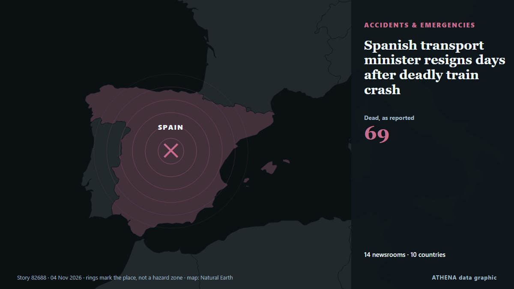

الحوادث والطوارئ
برعايةبرعاية  Cybernetics and Artificial Intelligence Lab Welcome to the Cybernetics and Artificial Intelligence Laboratory, established at the Department of Business Administration of the National and Kapodistrian University of Athens. The lab is headed by Professor Dimitrios Thomakos. The lab aims to do research that can be published in top venues. Our research uses tools and methods of Artificial Intelligence, and lies in the following areas: - Forecasting - Decision making - Cyber security - Finance We are always looking forward to collaborating with exceptional students!
Cybernetics and Artificial Intelligence Lab Welcome to the Cybernetics and Artificial Intelligence Laboratory, established at the Department of Business Administration of the National and Kapodistrian University of Athens. The lab is headed by Professor Dimitrios Thomakos. The lab aims to do research that can be published in top venues. Our research uses tools and methods of Artificial Intelligence, and lies in the following areas: - Forecasting - Decision making - Cyber security - Finance We are always looking forward to collaborating with exceptional students!
| 22 أكتوبر | 0 |
|---|---|
| 23 أكتوبر | 1 |
| 24 أكتوبر | 0 |
| 25 أكتوبر | 0 |
| 26 أكتوبر | 0 |
| 27 أكتوبر | 0 |
| 28 أكتوبر | 1 |
| 29 أكتوبر | 1 |
| 30 أكتوبر | 1 |
| 31 أكتوبر | 3 |
| 1 نوفمبر | 6 |
| 2 نوفمبر | 5 |
| 3 نوفمبر | 6 |
| 4 نوفمبر | 0 |
تُعرض العناوين بالإنجليزية كما نُشرت.

Spanish transport minister resigns days after deadly train crash
At least 69 people were killed and dozens injured in the collision south of the capital, Madrid. من BBC News
Jesus de Miguel's tragic death: Wrong footballer faces racist abuse
A footballer in Spain has revealed that he has been receiving racist abuse, insults and threats after being mistaken for the goalkeeper involved in the tragic collision that claimed the life of… من Gulf News
Learjet Parts Found Miles from Florida Crash Site, NTSB Says
Family of four, two close friends and nanny also died in crash as pilot identified as 55-year-old Jeff Gregory Family members on Monday identified a young Florida pilot as one of nine victims of a… من The Guardian
Spain's transport minister resigns after 69 killed in train crash disaster
Dr Marta Shahbazi was one of 69 people killed in the devastating crash last week. من Birmingham Mail
Helicopters collide below Mount Everest base camp, killing 1 person and injuring 2
Two helicopters collided near Mount Everest’s base camp, resulting in one fatality and two injuries. من Arab News
2 foreign nationals die of suspected electrocution in Bengaluru 5-star hotel’s pool
On Friday evening, two foreign nationals from Germany and Slovakia died from suspected electrocution in a hotel swimming pool. من Times of India
New Zealand vs India: Devon Conway ruled out of 1st ODI after training collision with Henry
New Zealand skipper Santner indicated that Tim Seifert, the back-up batter in the squad, would be a direct replacement for Conway. من Sportstar
Pilot's chilling last words as jet crashes to ground in Florida, killing nine
The pilot could be heard screaming as she spoke to air traffic control about the situation. من Chronicle Live (Newcastle)
Five teenagers stabbed at Halloween party
Five teenagers have been seriously injured after being stabbed at a Halloween party, police have said. من MyJoyOnline
Russian attack sparks fire at transport infrastructure facility in Kropyvnytskyi
Firefighters in Kropyvnytskyi have extinguished a fire at a transport infrastructure facility caused by a Russian attack. من Ukrinform (English)
Bahamas-Bound Jet Crashes in Florida, 9 Dead
A USD$2 million business jet carrying nine people has crashed in Florida. من Sydney Morning Herald
German ministers vow tough response to Frankfurt riots and looting
FRANKFURT/PEISSENBERG, Germany, Nov 1 - German ministers threatened tough penalties for looters and rioters who damaged stores and injured more than 100 police officers in Frankfurt overnight, while… من The Straits Times
Plaka Explosion: How a Copper Pipe Theft Led to Six Deaths
Security footage has helped investigators reconstruct the movements of three suspects accused of stealing a gas pipe from an Athens building, triggering a leak that led to a devastating explosion… من to vima
'Mayday, mayday': Chilling final cockpit calls before 9 die in Florida jet crash
KUALA LUMPUR: “Mayday, mayday” and “We’re going to crash into the ground” were among the last words heard from the cockpit of a private jet before it plunged into a residential area in Palm Beach… من New Straits Times
One dead, three rescued in Lagos building collapse
The Lagos State Emergency Management Agency (LASEMA) has confirmed one death and the rescue of three adult males following the collapse of a two-storey building under construction in Fadeyi, Lagos. من Vanguard
Melbourne Cup weekend crashes on Victorian roads leave eight people dead
According to the Transport Accident Commission, 220 lives have been lost on Victorian roads so far this year. من ABC News Australia
Nigerian families and survivors seek justice over miners' deaths
MINNA, Nigeria, Oct 30 - Families of 37 artisinal miners who died in custody in Nigeria want swift justice and the return of property seized during their arrest, saying no financial compensation will… من The Straits Times
Multiple shootings on Halloween leaves 4 dead, 15 injured
At least 3 victims remain in critical condition following shooting at Fairfield mall, as police search for suspect. من Express Tribune
Strike at industrial complex in Saudi Arabia's Dammam causes huge fire: Iranian state media
TEHRAN, Nov. 01 (MNA) – A major fire erupted at an industrial facility in Dammam, eastern Saudi Arabia, following a reported Yemeni attack. من Mehr News (English)